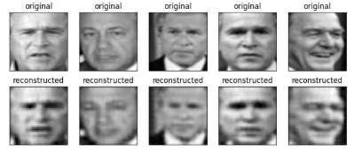

|
chaitanya.chawla [at] tum [dot] de
I'm an ECE undergraduate student in the School of Computation, Information and Technology at Technical University of Munich, where I have worked with Prof. Darius Burschka and Prof. Dongheui Lee. My work focusses on extracting and learning skill abstractions across humans and robots.
Currently I am collaborating with Prof. Jean Oh and Tanmay Shankar from Carnegie Mellon University, where I am currently working on extracting abstract representations of agent-object interactions.
I have also been a part-time working student at Roboverse Reply GmBH building applications for Boston Dynamics Spot Robot. |
Research |

|
We developed an unsupervised approach to learn correspondences between skills across humans and various morphologically different robots, taking inspiration from unsupervised machine translation. Our approach is able to learn semantically meaningful orrespondences between skills across multiple robot-robot and human-robot domain pairs, despite being completely unsupervised. |

|
We developed an unsupervised approach to learn correspondences between skills across humans and various morphologically different robots, taking inspiration from unsupervised machine translation. Our approach is able to learn semantically meaningful orrespondences between skills across multiple robot-robot and human-robot domain pairs, despite being completely unsupervised. |

|
We presented an unsupervised approach to learn robot skills from demonstrations. We formulated a temporal variational inference, to learn robot skills from demonstrations in an entirely unsupervised manner, while also affording a learnt representation space of skills across a variety of robot and human characters. |
Projects
|  |
Comparing different methods including Autoencoders and PCA, for feature representation in face reconstruction
|

|
Distributing candies during Halloween at the Robotics Institute, Carnegie Mellon University
|
Teaching Assistantships
At TU Munich:-
|
Last updated: Jan 2023 |